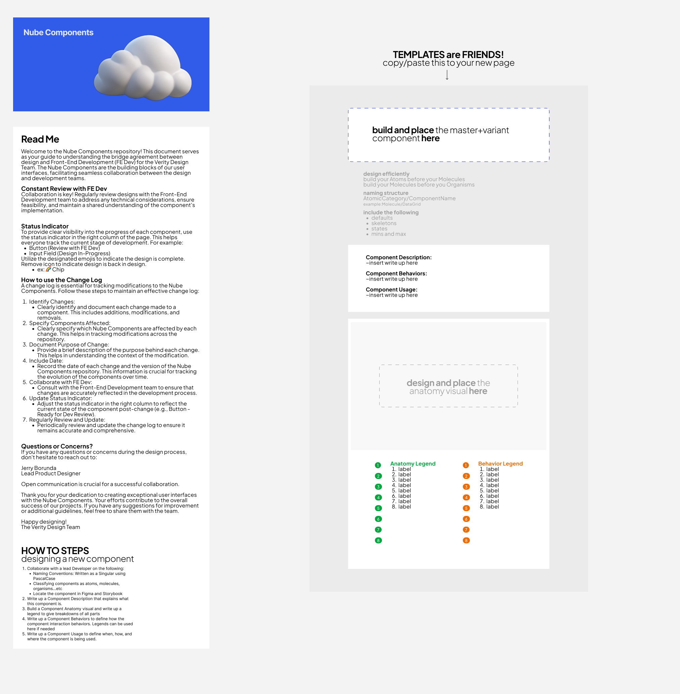
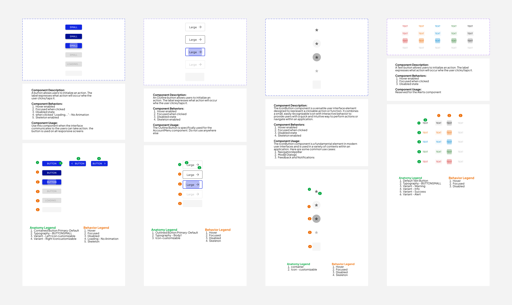
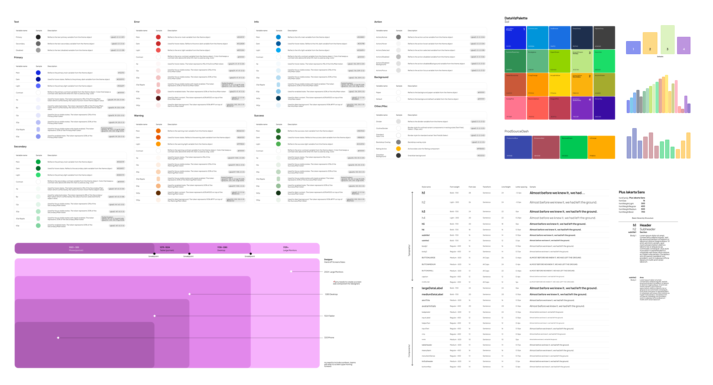
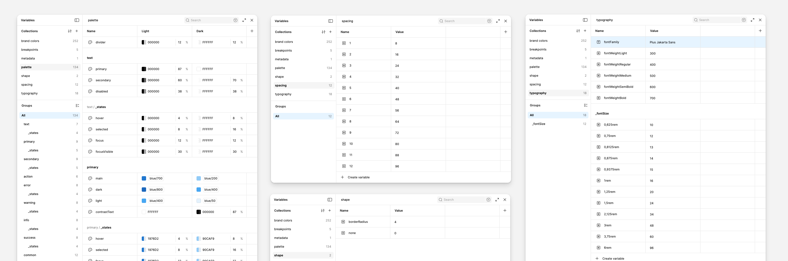

Nube Design System
Standardizing the Sustainability Stack
Gevo needed a unified brand identity that could scale seamlessly across data-heavy product dashboards, customer portals, and public-facing marketing sites. The catch? It also had to support unique, white-labeled theme variants for B2B customers and strict accessibility contrast standards. I stepped in as the Design System Owner to architect a robust, multi-tier token system that unified color, spacing, and typography across web and mobile platforms—turning chaotic style variables into a single, automated source of truth.
Fragmented Pixels & Raw Hex Codes
Before the design system was hard-coded, Gevo's digital interface was suffering from severe visual drift and engineering bottlenecks:
The Palette Explosion
Disconnected teams were inventing their own color palettes and spacing scales on the fly, leading to an inconsistent and fractured user experience.
The Raw Hex Trap
There was no semantic layer. Designers and developers were copying and pasting raw hex codes and hard-coded pixel values, forcing engineers to manually rebuild basic styles over and over.
The Brand Update Nightmare
A simple global brand change (like updating a primary corporate green) required a grueling, multi-week coordination dance across multiple isolated code repositories.
The Theme Barrier
The platform lacked the foundational architecture needed to easily swap themes for B2B clients or dynamically adjust contrast for accessibility compliance.
Figma read-me for the design system

The 3-Tier Token Engine
We didn't just organize components; we re-engineered the very DNA of our UI properties by rolling out a synchronized architecture. A highly scalable token hierarchy completely isolated raw values from operational components:
Global / core tokens
The raw foundational values (e.g., color-green-500 → #22C55E).
Semantic / alias tokens
The functional meaning of a value (e.g., color-background-success → color-green-500).
Component tokens
Granular, isolated component overrides (e.g., button-primary-background-active → color-background-success).
The Automated Pipeline
We established an end-to-end design-to-engineering synchronization pipeline, ensuring that a token change in Figma instantly committed and updated the developer code repositories.
Component Library Modernization
We completely refactored Gevo’s top 20 highest-traffic UI components, wiping out legacy styling and replacing it entirely with the new semantic tokens.
Baked-In Accessibility
Accessibility was shifted entirely left. By encoding WCAG contrast ratios directly into our semantic token mappings, developers achieved automatic compliance out of the box.
Modernizing the button components

Auditing to Ship
We systematically transitioned the platform from legacy code to a modern, tokenized workflow:
The Code Audit
Conducted a comprehensive deep-dive into existing product user interfaces and CSS variables to isolate and map out every rogue style variant.
The Blueprint
Defined and fully documented strict taxonomic naming guidelines so both engineering and design teams could speak an identical nomenclature.
The Library Build
Constructed and deployed the centralized token libraries inside Figma to act as the visual source of truth.
The Pilot Launch
Applied the brand-new token structure to our top 20 high-traffic components, battle-tested the integration in a staging environment, and shipped them to production under rigid QA testing parameters.
Figma token library

The Impact Metrics
By turning style properties into a systemized code asset, we unlocked massive velocity gains for both product design and engineering:
Visual Consistency Up
Slashed random visual inconsistencies by ~45% within weeks, tracked and verified via automated weekly visual interface audits.
Rapid Brand Updates
Reduced global brand theme updates from a grueling multi-week developer ticket down to under a single day for global token pushes.
Instant Theming Unleashed
Successfully enabled independent product teams to launch custom theme variants and accessible views with zero specialized design intervention.
UI and component auditing sessions

Lessons & Next Steps
The Hard Lesson
System governance cannot be an afterthought. We realized early on that token changes require a lightweight, cross-functional approval workflow to prevent teams from accidentally breaking dependent values downstream.
The Horizon
Our next milestone is automation—creating a formalized token deprecation policy and deploying automated linters within the developer build pipeline to automatically flag and reject any legacy, hard-coded values before they hit production.